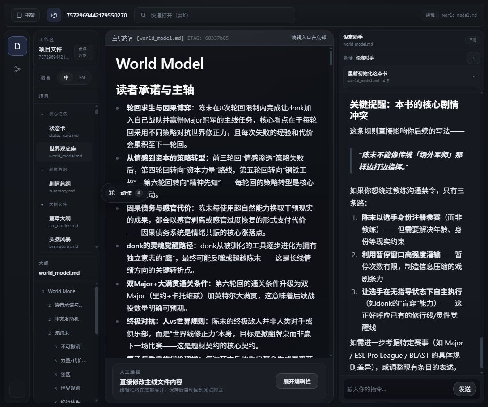

把长篇小说创作变成可维护的本地工程资产
novel_agent 是一个面向长篇网文作者的本地优先创作工作台。它用 Dify 承载活跃 Agent
工作流，用后端 LangChain 管线承载已迁移的初始化和结构化批处理，用 LoreGit 工具层把
Agent 写入动作约束到每本书的 Markdown 工作区和 Git 历史中。
解决的问题
长篇网文创作的核心风险不是单次生成质量，而是长期失控。原文、摘要、世界观、状态卡、 文风档案、大纲和草稿如果只留在聊天上下文里，就很难维护、审查、回滚或分支试错。
把小说资料、Agent 输出和作者判断沉淀成可读写、可审阅、可比较、可分支的工程资产。
这是本地 demo 和工程样例，不是成熟云端 SaaS，也不是适配所有机器的一键部署产品。
不是什么
- 不是纯 Dify 应用。Dify 承载活跃 Agent 工作流，但本地书库、Git、导入、审阅台和 LangChain 批处理在项目后端与前端中。
- 不是聊天壳。初始化、重跑、滚动三章、正文归档、配置中心和 Git 操作属于工作台动作层。
- 不是通用 Agent 框架。它是面向小说资料库和章节生产的产品化工作流。
- 不是完整 Dify Runtime 备份。公开仓库包含 DSL 快照，不包含 Dify PostgreSQL 私有备份或密钥。
系统架构
架构核心是把语义判断、确定性 IO、运行配置、版本历史和作者审阅分开，避免 Agent 聊天直接变成不可审计的文件修改。

| 层级 | 职责 | 典型文件 |
|---|---|---|
| 前端工作台 | 书架、导入、文件浏览、聊天、动作面板、审阅台、Git 分支台、配置入口。 | frontend/src/App.tsxfrontend/src/bookshelf/BookshelfApp.tsx |
| Flask 后端 | 统一 API、路径安全、书库布局、Git 操作、Dify 桥接、SSE 进度、运行配置。 | novel_git_server/app.pynovel_git_server/agents/*.py |
| Dify 工作流 | 活跃的大纲、续写、审核，以及初始化后世界/文风协作；部分旧 DSL 已退役。 | dify_workflows/*.yml |
| 后端 LangChain 管线 | 摘要归档、世界/状态初始化、文风初始化、结构化批处理和模型兼容调用。 | novel_git_server/pipelines/*.py |
| LoreGit ToolProvider | 让 Dify Agent 以受控工具方式读写书库、校验章节、提交草稿。 | novel_git_server/agents/tools.py |
运行时权威
novel_git_server/storage/<book_id>/。正式章节、知识文件、草稿和每书 Git 历史都在这里。
dify_workflows/*.yml 是净化快照，不是完整运行时备份。
关键数据对象
novel_git_server/storage/<book_id>/
├── .git/
├── chapters/
├── summary.md
├── world_model.md
├── status_card.md
├── domain_rules.md
├── style_fingerprint.md
├── style_review.md
├── style_constraints_for_continuation.md
├── brainstorm.md
├── master_outline.md
├── arc_outline.md
├── chapter_outline.md
├── chapter_draft.md
├── error_archive.md
└── import_report.jsonsummary.md是从正式章节派生的阅读档案，当前由后端摘要归档管线生成和重建。world_model.md是长期世界规则和约束，status_card.md是当前章节后的状态投影。- 四个大纲文件分层承担灵感池、长线承诺、篇章留存和可执行章节卡。
chapter_draft.md是续写草稿和审阅面，只有作者确认后才归档进chapters/*.md。
主要运行流
导入与初始化
章节来源
-> 导入解析与质量门槛
-> chapters/*.md + import_report.json
-> 后端 summary.md 批处理归档
-> 后端 world_model.md / status_card.md 初始化
-> 后端文风诊断三件套
-> 大纲底座大纲到续写
brainstorm.md
-> master_outline.md
-> arc_outline.md
-> chapter_outline.md
-> 续写 Agent 写 chapter_draft.md
-> 审核 Agent / 审阅台
-> 作者确认
-> chapters/*.md
-> summary.md / status_card.md 更新剧情分支
GitBranchPanel
-> fetchGitHistoryList(ref)
-> /books/git_history_list?ref=...
-> 只查看分支时间线，不切换工作树
显式切换按钮
-> /books/git_checkout
-> 草稿/脏工作区保护
-> 实际切换剧情分支Dify 与 LangChain 的管线归属
这里是当前主链路的关键表。注意：退役不是删除 DSL，而是说明它不再承担当前主动生产职责。
| 管线 / Agent | 状态 | 当前职责 |
|---|---|---|
| 读书存档 Agent | 已退役 | summary.md 初建和重建已迁移到后端 LangChain 摘要归档管线，仅保留历史兼容和审计意义。 |
| 世界模型 Agent | 保留协作 | 初始化/重建职责已退役；当前负责初始化后的讨论、解释、局部修订和考据。 |
| 文风学习 Agent | 保留协作 | 初始化/重建职责已退役；当前负责文风档案后的解释、建议和作者协作修订。 |
| 灵感大纲 Agent | 活跃 | 大纲讨论、联网参考、四层大纲落档和章节卡补充。 |
| 续写 Agent | 活跃 | 按章节卡和项目档案写入 chapter_draft.md。 |
| 审核 Agent | 活跃 | 审查剧情、设定、状态、断章和正文归档风险，写入 error_archive.md。 |
| 后端 LangChain 管线 | 活跃 | 摘要归档、世界/状态初始化、文风初始化、章节卡/摘要结构修复和 OpenAI-compatible 调用。 |
核心代码地图
| 路径 | 负责什么 | 不要误解成 |
|---|---|---|
frontend/src/App.tsx | 主工作台装配：文件视图、Agent 面板、审阅台、Git 工作台、动作入口。 | 业务规则权威 |
frontend/src/bookshelf/BookshelfApp.tsx | 书架、导入、配置入口和书籍管理。 | 章节解析器 |
novel_git_server/app.py | Flask app、blueprint 注册、健康检查和运行配置装配。 | 单体业务文件 |
novel_git_server/agents/world_draft.py | Dify Agent 流式桥接、文件路由和草稿写入流程。 | 所有世界模型初始化 owner |
novel_git_server/agents/git_console.py | 每书 Git 状态、分支、历史、diff、提交、回退。 | 剧情质量裁判 |
novel_git_server/pipelines/summary_archive.py | 摘要归档批处理与确定性渲染。 | 聊天式读书 Agent |
novel_git_server/pipelines/world_model_init.py | 世界/状态初始化批处理。 | 互动世界观 Agent |
novel_git_server/pipelines/style_artifact_init.py | 文风初始化和诊断文件生成。 | 文风硬门 |
测试与证据
项目测试以 Flask 后端单元/集成测试和前端构建为主。代表性测试包括：
novel_git_server/tests/test_v53_git_console.py：Git 分支、历史、diff、回退、保护逻辑。novel_git_server/tests/test_v62_markdown_section_write.py：Markdown 区块写入和草稿保护。novel_git_server/tests/test_v72_summary_archive_pipeline.py：摘要归档管线。novel_git_server/tests/test_v73_runtime_config.py：本地运行配置。novel_git_server/tests/test_v74_openai_compatible_config.py：OpenAI-compatible 模型配置。deploy/demo/compose_smoke.py：Compose demo 的后端、前端和可选 Dify smoke。
npm run build
python -m unittest novel_git_server.tests.test_v53_git_console -v
python -m unittest novel_git_server.tests.test_v62_markdown_section_write -v
git diff --check部署与运维边界
当前部署目标是本地可复现 demo：Windows 本地启动、Compose demo、GHCR 镜像和 Release ZIP。 它们可以复现前后端、示例配置、Dify DSL 和 smoke check，但不会包含真实 Dify 数据库、密钥或私有书库。
deploy_doctor.py --profile local 检查 Python/Git/Node/npm/Docker、后端健康检查、前端书架页、
API 代理和 Dify 地址。本地画像不检查会话隔离，因为本地开发不需要公共访问者沙箱。
deploy_doctor.py --profile public-demo 额外检查 cookie 沙箱、配置中心只读、Dify 无 cookie
工具回调绑定，以及 book_id 优先级。这个画像只用于小范围云端体验入口。
# 本地
python deploy/demo/deploy_doctor.py --profile local --env deploy/demo/.env --backend-url http://127.0.0.1:8000 --frontend-url http://127.0.0.1:5173
# 受控体验版服务器
python deploy/demo/deploy_doctor.py --profile public-demo --env /etc/novel-agent-demo.env --backend-url http://127.0.0.1:18000 --frontend-url http://127.0.0.1:15173项目由个人维护且架构原创性较高。如果部署失败，建议收集终端日志、
.env 配置结构、Docker/WSL 状态、
Dify Runtime 状态、模型配置和 ToolProvider 地址，再使用 AI 辅助定位是路径、端口、密钥、服务顺序还是容器访问宿主机问题。
| 常见坑 | 定位方式 |
|---|---|
| Dify 能回复但不能写文件 | 从 Dify 运行网络检查 LoreGit ToolProvider 地址；容器里的 localhost 通常不是宿主机。 |
| 服务器源码更新后页面不变 | 重新执行 npm ci && npm run build，确认静态代理服务使用新的 frontend/dist。 |
| 新书导入提交失败 | 每本书是独立 Git 仓库，服务器或 systemd 环境需要配置 user.name 和 user.email。 |
| 体验版会话串写 | 运行 public-demo 画像；Dify 回调没有浏览器 cookie，必须能用合法 demo_<session>_<book> 绑定回原会话。 |
完整命令、Release ZIP、Compose、GHCR、Dify Runtime 和 FAQ 请看 部署说明。
发布边界
可以发布
- 源码、前后端代码、后端 LangChain 管线代码。
- Dify DSL YAML 快照、示例配置、文档、截图和演示脚本。
- Release ZIP、GHCR 镜像和 smoke check。
不能发布
- 模型 API Key、Dify App API Key、Dify 私有数据库备份。
- 真实用户书库、
novel_git_server/storage/、.runtime/。 - 私有聊天、登录态、Cookie 或本地绝对路径。
FAQ
为什么不用纯 Dify？
纯 Dify 适合可视化 Agent 编排，但很难安全承载每书本地 Git 仓库、文件 diff 审阅、正文归档、导入质量门槛、分支回退和本地配置中心。
为什么还要 LangChain？
摘要归档、世界/状态初始化、文风初始化等任务更像可重复批处理，需要分批、结构化校验、确定性渲染、进度状态和 OpenAI-compatible 配置。
哪些 Dify 管线已经退役？
读书存档agent 已从当前主动链路退役。世界模型和文风学习两个 Dify Agent 没有整体退役，但它们的初始化/重建职责已经迁移到后端管线。
Agent 能不能直接改正文？
续写 Agent 写 chapter_draft.md，不是直接写正式章节。正式章节归档需要作者确认，由后端正文化流程写入 chapters/*.md。